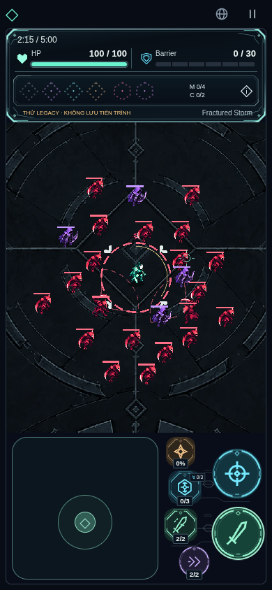
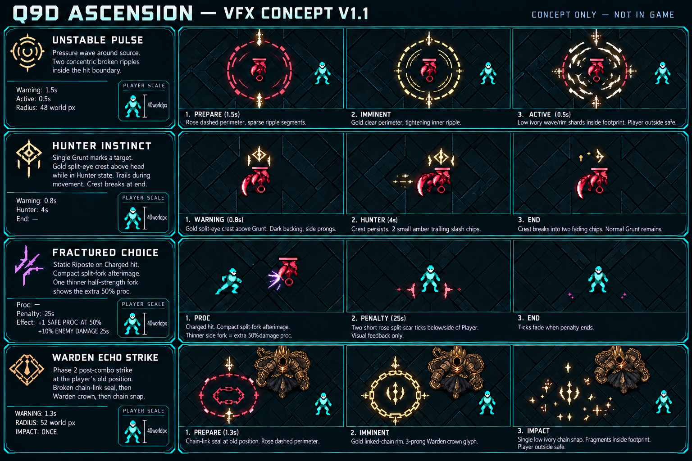
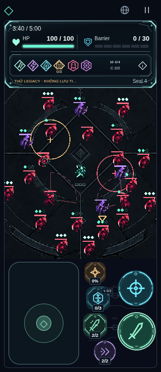
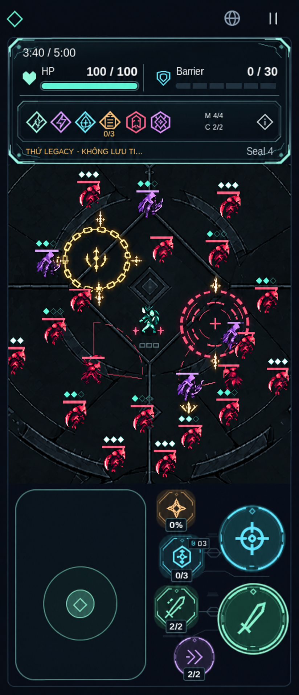
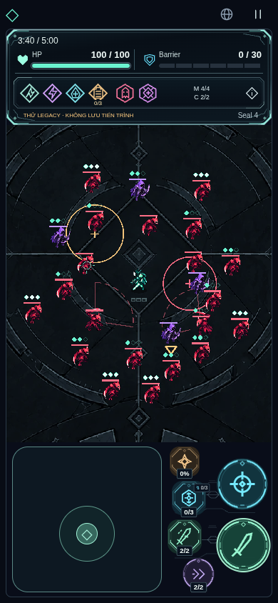
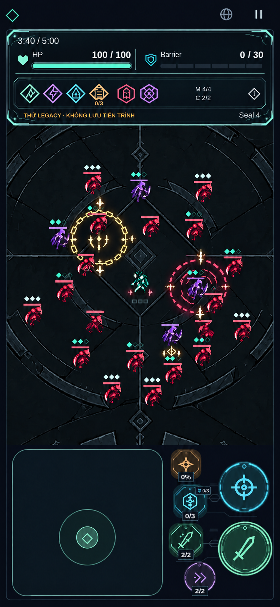
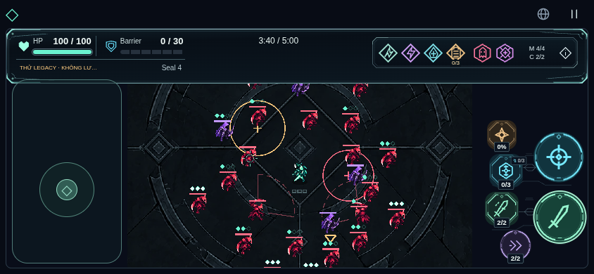
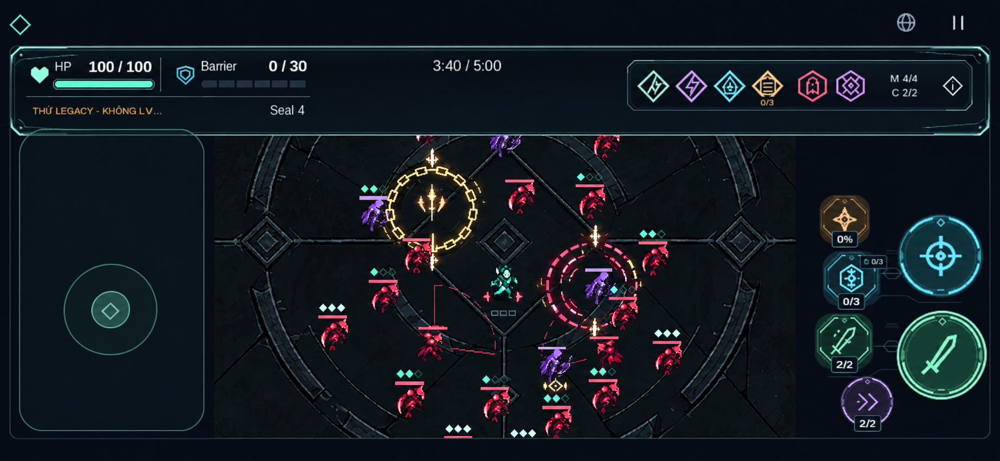
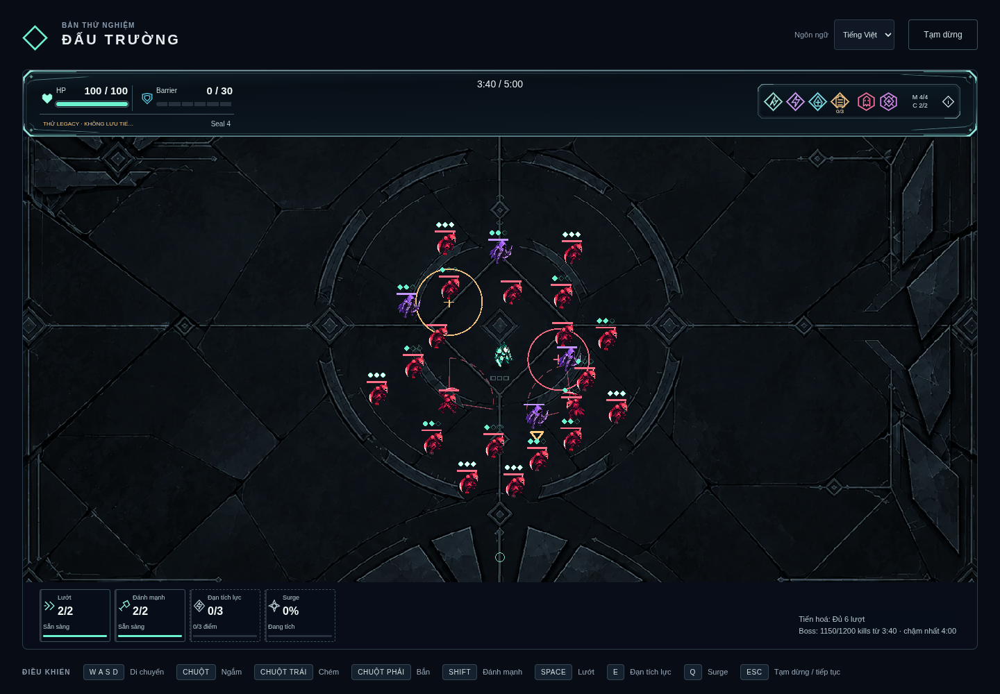
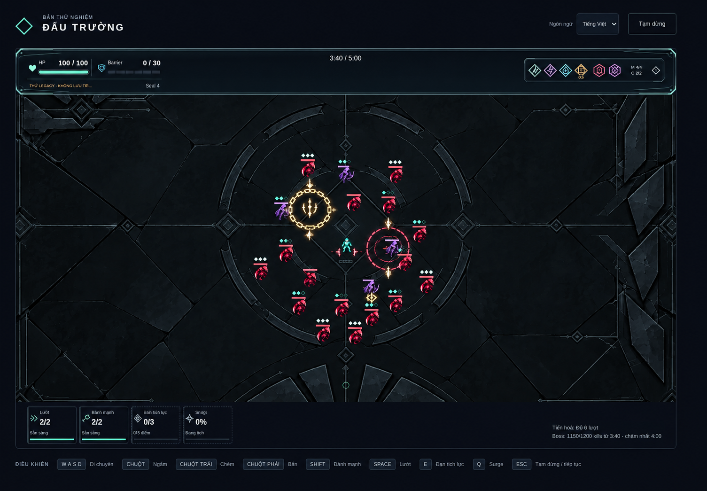

Approved style refs
GiữQ7C/Q8C/Q9C; khácscene/layout lịch sử, không giả là before/after.



VISUAL APPROVED V1.1 · CONCEPT SNAPSHOT — runtime xem ../vfx-production/README.md
Baseline thựcafd084a:24quái/2windup/Hunter/Pulse/Echo/penalty inject để stressvisual. Mockup doImageGen tạo trên screenshot; không là runtime/live/collider/motion/FPSproof. Gameplay vàproductionassets giữ nguyên.
Spec/checklist/giới hạn · Prompt/provenance

Không cropboard làm sprite. Không suy approved từ ảnh sinh thành công.
Cuộn ngang để so cùngCSSwidth; click mở gốc. Composite có thể redraw/resample, exactregistration chưa chứng nhận.


Cuộn ngang để so cùngCSSwidth; click mở gốc. Composite có thể redraw/resample, exactregistration chưa chứng nhận.


Cuộn ngang để so cùngCSSwidth; click mở gốc. Composite có thể redraw/resample, exactregistration chưa chứng nhận.


Cuộn ngang để so cùngCSSwidth; click mở gốc. Composite có thể redraw/resample, exactregistration chưa chứng nhận.


Chưa là proposedcorner hoặc integration proof.
GiữQ7C/Q8C/Q9C; khácscene/layout lịch sử, không giả là before/after.
